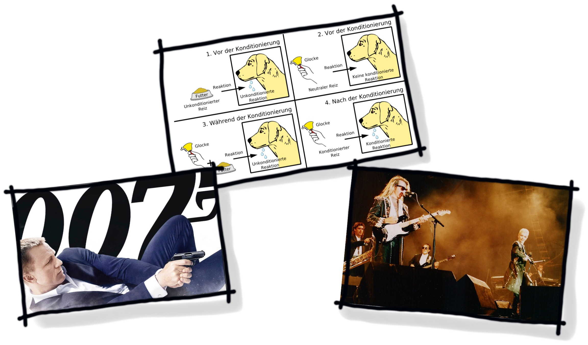

Sketchnoting
Organisatorisches
- Zeit: 9:00 – 17:00
- Mittagspause: 13:00 – 14:00
- Papier und Stifte gsponsort
Papier
- Stärke ab 120g/qm
- gestrichenes Papier optimal
Stifte
- schwarzer outliner,
Dokumentenecht - pastellfarbene Tintenstifte
mit Pinselspitze - grauer Schattierstift
mit Pinselspitze
Vorstellungsrunde
bitte malt wahlweise
- wo ihr herkommt
- euer Hobby
- euren ausgeübten Beruf
- den Traumberuf als Kind
Sketchnotes?
- Ursprung: Höhlenmalerei
- Metaphern, Symbole, Text
- Verzierungen
- Individueller Stil
- Idee, Abstraktion
Individuelle Erinnerung
75% der Empfindung ist SEHEN
Schreiben vs. Sketchen
vergleichbare Disziplinen
- Graphic Recording
- Lettering
- Protokollierung
- Memo
Reihenfolge
- Outline
- Schatten
- Colorierung
Graphic Jam
- 3 Runden
- je 3 Begriffe malen
- 30 – 20 – 10 Sekunden Zeit
danach gemeinesame Besprechung
Visuelles Alphabet
- 5 Buchstaben der Bildsprache
- Grundlage für Elemente
- Übung macht den Meister
Visuelles Alphabet
Symbole
- bildhafte Darstellung
- minimalistisch
- Wiedererkennung
- Grundlage: Alphabet
- Mehrzahl: zusätzliche Linien
Symbol: Start, Ziel
- Start:
Linie + Dreieck - Ziel:
2 Linien, 2 Bögen
Symbol: Zeit

- Kreis
- 2 Linien
Symbol: Koffer

- Korpus: Rechteck
- Griff: Rechteck
- Reisekoffer: Ecken Viertelkreise
- Aktentasche: Klappe Bogen
Symbol: Geld
- Münzen: Ellipse
- Schein: 2 S-Kurven, 2 Linien
Symbol: Lupe
- 2 Kreise
- Ellipse
- 2 Bögen
Symbol: Schirm

- Halbkreise
- Regenschirm: Griff Linie mit Bogen
- Fallschirm: Leinen
Symbol: Seite
- Rechteck
- Dreieck
- evtl. Beschriftung
Symbol: Fußabdruck
- Halbkreise
- Linien
Symbol: Sprachrohr
- 2 Linien
- 4-5 Breisbögen
Symbol: Lampe
- U
- Z
- M
- O
Symbol: Ausgang
- Linien
Symbol: Fahrrad
- 2 Dreiecke, alternativ "M"
- 2 Kreise
- Linien
Symbol: Pferd
- Korpus: Rechteck
- Hals: Dreieck
- Kopf: Dreieck